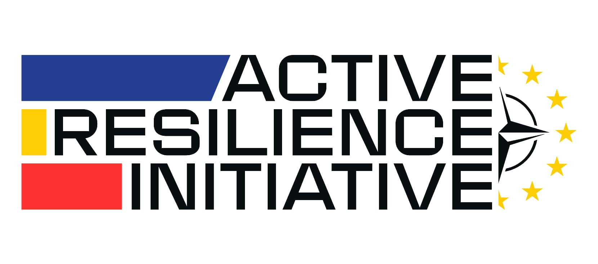
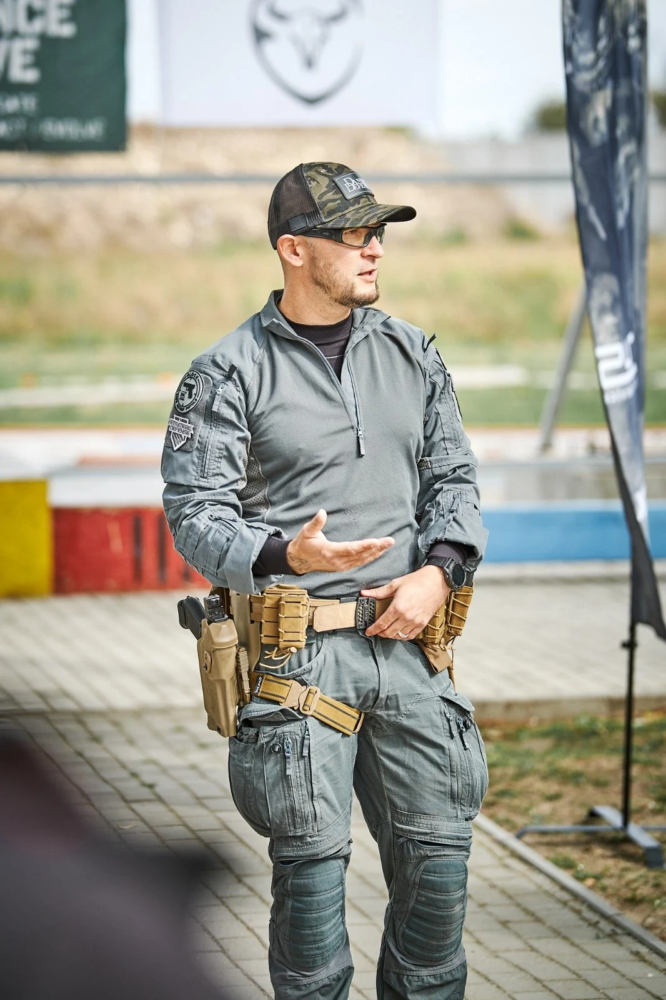
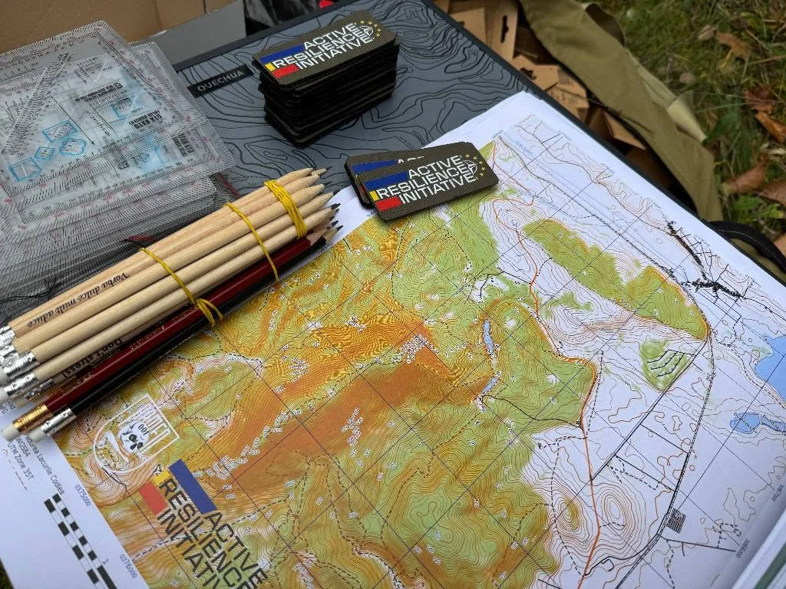

Orientare & autonomie
Hartă, busolă, planificarea traseului și gestionarea resurselor.

ACTIVE RESILIENCE INITIATIVE / PREGĂTIRE ÎN TEREN
Harta îți arată drumul. Mintea te duce la destinație.
Învață să te orientezi, să decizi sub presiune și să te adaptezi.
Alături de oameni care transformă pregătirea în practică.
01 / INIȚIATIVA
Reziliența se construiește înainte să ai nevoie de ea.
ARI dezvoltă programe de educație practică, prevenție și siguranță pentru populația civilă și profesioniști. Exercițiile aplicate te ajută să înțelegi o situație, să stabilești priorități și să acționezi responsabil.
Inițiativa a început în 2025 și a devenit asociație în 2026. Voluntarii, specialiștii și partenerii contribuie cu experiență, timp și resurse la pregătirea comunităților.
Observi contextul și identifici ce contează înainte de a acționa.
Lucrezi cu situații concrete, instrumente și oameni.
Reevaluezi deciziile când condițiile se schimbă.
CE EXERSEZI
Conținutul și nivelul de dificultate sunt stabilite pentru fiecare ediție.
Hartă, busolă, planificarea traseului și gestionarea resurselor.
Pregătire practică și priorități de intervenție, alături de instructori.
Roluri clare, lucru în echipă și decizii în condiții dificile.
Comportament responsabil, prevenirea riscurilor și verificarea informațiilor.
02 / ROADMAP ARI
De la primele exerciții la următoarea provocare. Începe cu ediția următoare și propunerile de ateliere sau explorează arhiva. Fiecare reper are obiective, activități și detalii de organizare.
Evenimentele propuse sunt concepte de program. Datele, locațiile și participarea vor fi anunțate după confirmare.
PREGĂTIREA TA / LISTĂ INTERACTIVĂ
Alege tipul activității. Bifează ce ai pregătit și păstrează lista cu tine, pe telefon sau pe hârtie.
Lista ajută la organizare. Pentru LANDNAV, cerințele finale și materialele oferite se confirmă cu organizatorii.
Întreabă despre echipament ↗
Bifele se păstrează doar în acest browser.
BIBLIOTECA PRACTICĂ
Ghiduri scurte, pe care le poți consulta și offline. Citește reperele, apoi exersează alături de instructori.
Pentru pregătirea în natură: Salvamont România. Pentru pregătirea gospodăriei: platforma DSU Fii pregătit.

03 / CINE ORGANIZEAZĂ
Asociația Active Resilience Initiative
O inițiativă privată non-profit dedicată educației pentru reziliență în situații de criză. Programele reunesc voluntari, instructori și specialiști din domenii complementare.
DIN TEREN / FOTO & VIDEO
Oameni care învață, explică și lucrează împreună. Explorează fotografiile ARI și spațiile pregătite pentru următoarele materiale.
Fotografii din arhiva publică ARI. Spațiile „În pregătire” vor fi completate cu materiale reale.
Urmărește activitățile pe Facebook ↗04 / PARTICIPĂ
Completează cererea pentru LANDNAV Codlea, 8–9 noiembrie. Organizatorii îți vor confirma disponibilitatea și detaliile participării.
După completare, alegi WhatsApp sau e-mail și trimiți tu mesajul pregătit. Completarea formularului nu rezervă automat un loc.
Ai întrebări? Scrie pe WhatsAppPREGĂTIREA CONTINUĂ CU TINE
Un exercițiu începe cu o hartă, un instructor și oameni care aleg să se implice.
ARI organizează activități gratuite. Materialele, echipamentele, transportul și organizarea au însă costuri. Contribuția ta ajută echipa să pregătească următoarele ediții și să ducă educația practică în comunități.

Acestea sunt direcții de utilizare, nu echivalențe fixe între o sumă și un rezultat. Pentru o contribuție dedicată unui proiect, discută cu ARI.
Datele oficiale de susținere ARI ↗ALEGE CUM TE IMPLICI
Alege suma și copiază datele pentru transfer. Donația se finalizează în aplicația băncii tale.
Introdu o sumă între 1 și 1.000.000 lei, fără zecimale.
Poți configura un transfer recurent în aplicația băncii tale, folosind aceste date. Tu alegi suma și frecvența și le gestionezi direct la bancă.
Poți contribui cu fonduri, materiale, transport, spații sau servicii. Stabiliți împreună cu ARI proiectul, necesarul și forma de colaborare.
Pentru condițiile fiscale aplicabile companiei tale, consultă persoana care se ocupă de contabilitate.
Dacă dorești să susții ARI prin redirecționarea a până la 3,5% din impozitul anual pe veniturile din salarii și asimilate salariilor, cere echipei formularul cu datele asociației și informațiile aplicabile situației tale.
Cere formularul ARI ↗Eligibilitatea, termenul și modalitatea de depunere trebuie confirmate pentru anul fiscal relevant. Informații ANAF despre formularul 230.
AI ȘI ALTE MODURI DE A AJUTA
Poți contribui la logistică, comunicare sau pregătirea activităților. Spune-ne ce experiență ai și unde ai vrea să te implici.
Vreau să fiu voluntar ↗BINE DE ȘTIUT
Experiența necesară diferă de la un eveniment la altul. Menționează nivelul tău în cererea de înscriere; organizatorii confirmă dacă ediția este potrivită și ce pregătire cere.
Pornește de la lista interactivă și confirmă cu ARI cerințele ediției și materialele oferite. Pentru LANDNAV, ora de plecare, durata, vremea și traseul influențează echipamentul.
Deschide lista de echipament ↓Nu. Formularul pregătește o cerere pe care o trimiți prin WhatsApp sau e-mail. Echipa ARI confirmă disponibilitatea și condițiile participării.
Nu. Activitățile ARI sunt gratuite, iar donațiile sunt voluntare. O donație nu rezervă un loc și nu înlocuiește confirmarea organizatorilor.
Da, poți discuta cu ARI despre materiale, transport, spații sau servicii. Contactează echipa înainte, pentru a verifica necesarul și condițiile colaborării.
Transferul se face în contul Asociației Active Resilience Initiative. Pagina oficială menționează materiale educaționale, echipamente, transport, logistică și organizare. Pentru documente sau utilizarea într-un proiect anume, contactează echipa.
Cere detalii despre susținere ↗RĂMÂNEM ÎN LEGĂTURĂ